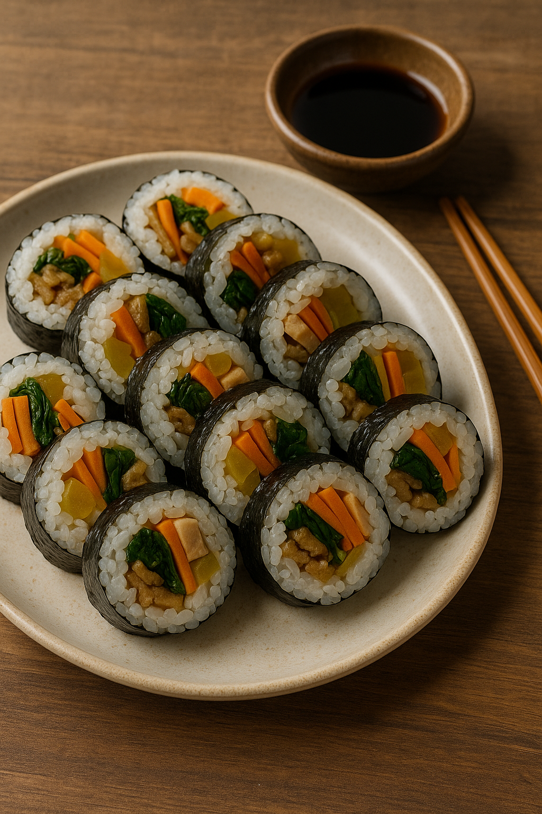

환영 해요
Descubre algunos de los platos más representativos de Corea del Sur.
Explora nuestras recetas y disfruta de un vídeo sobre cómo preparar kimchi.
Kimbap

Descubre algunos de los platos más representativos de Corea del Sur.
Explora nuestras recetas y disfruta de un vídeo sobre cómo preparar kimchi.